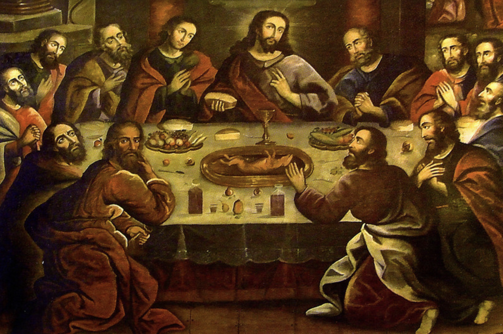
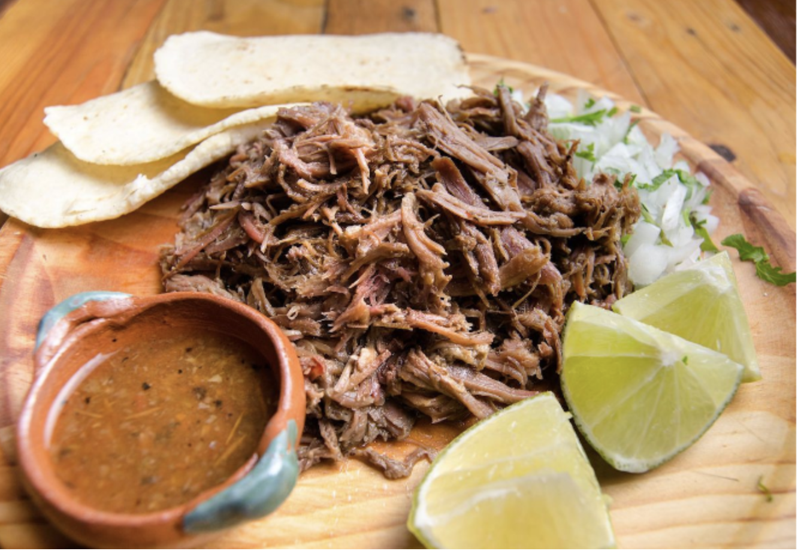

잉카 문명 5,000년의 식탁 위에 오른 기니피그 통구이.
쿠스코 대성당 최후의 만찬 벽화에도 등장하는
안데스 고원의 정통 육류 요리.
페루 쿠스코 대성당에는 1753년 제작된 유명한 최후의 만찬 그림이 걸려 있습니다. 이탈리아 원본과 달리 예수와 제자들의 식탁 한가운데에 기니피그 통구이가 놓여 있습니다. 스페인 화가가 현지 문화를 반영한 것으로, 쿠이(Cuy)의 문화적 위상을 단번에 보여줍니다.
쿠이는 안데스 고원에서 약 3,000~5,000년 전 가축화된 동물로, 잉카제국 시절 왕족 연회와 종교 의식에 올랐습니다. 해발 3,500m 고원에서 작은 공간에 가족 분량의 단백질을 공급할 수 있는 거의 유일한 가축이었으며, 오늘날 페루에서는 연간 약 6,500만 마리가 소비됩니다.
📎 출처: FAO (2009) Livestock in the Balance · Antúnez de Mayolo (1981) La Nutrición en el Antiguo Perú · Cushner (1980) Lords of the Land
마늘 페이스트, 쿠민, 아히 아마리요, 오레가노, 라임즙, 소금, 올리브오일을 한 그릇에 넣고 고루 섞어야 한다.
5분쿠이 전체 표면과 복강 안쪽에 마리네이드를 손으로 문질러 발라야 한다. 껍질 아래에도 손가락을 넣어 직접 발라주어야 향이 깊이 밴다. 랩으로 감싸 냉장고에서 최소 4시간, 이상적으로는 하룻밤 재워야 한다.
4~12시간 냉장오븐을 200℃로 예열한다. 냉장고에서 꺼낸 쿠이를 30분간 실온에 방치해야 한다. 로스팅 팬에 오일을 바르고 쿠이를 등이 아래로 향하게 올린 뒤 표면에 오일을 한 번 더 솔질한다.
200℃ 예열200℃에서 40~45분간 굽는다. 중간에 팬에 고인 육즙을 떠서 표면에 발라주는 배스팅을 1회 해야 한다. 껍질이 황갈색으로 익어가면 정상이다.
200℃ · 40~45분뒤집어 반대면이 위로 오게 한다. 온도를 220℃로 올려 15~20분 더 구워야 한다. 전체가 황금빛 갈색이 되고 다리 관절을 흔들었을 때 부드럽게 움직이면 완성이다. 내부 온도계로 72℃를 반드시 확인해야 한다.
220℃ · 15~20분⚡ 핵심포일로 느슨하게 덮어 10분간 레스팅해야 한다. 삶은 감자를 반으로 잘라 함께 플레이팅하고 우아카타이 살사를 곁들여 낸다. 전통 방식대로 통째로 손으로 뜯어 먹는다.
레스팅 10분쿠이는 닭보다 살이 얇아 오래 구우면 금세 퍽퍽해진다. 내부 온도계로 허벅지 72℃를 반드시 확인해야 한다. 아히 아마리요가 없으면 고추장+고수+라임으로 대체한다. 쿠이를 구하기 어려울 경우 소형 토끼(코니)로 대체하면 가장 유사한 결과를 얻을 수 있다.
1차: 200℃ / 40~45분
2차: 220℃ / 15~20분
내부온도: 72℃ (허벅지)
레스팅: 10분
냉장 2일 / 냉동 2주
남은 쿠이:
· 뼈 제거 후 볶음밥
· 타코 속 재료
· 감자와 해시

아즈텍 문명부터 이어진 땅속 화덕 조리법.
소 볼살을 치폴레·안초 칠레로 버무려
4시간 저온 브레이징한 멕시코 원조 BBQ.
이 요리가 전 세계 BBQ의 어원입니다.
바르바코아(Barbacoa)는 카리브해 타이노족 언어로 "나무 격자 위에서 굽는다"는 뜻입니다. 16세기 스페인 정복자들이 이 단어를 유럽으로 가져갔고, 영어 Barbecue(BBQ)의 직접적 어원이 되었습니다. 전 세계 모든 BBQ 문화의 씨앗이 멕시코에 있습니다.
전통 방식은 땅을 1.5m 파고 숯을 깔아 화덕을 만든 뒤, 마게이(용설란) 잎으로 고기를 감싸 하룻밤 묻어 익히는 것입니다. 소 볼살은 소가 하루 종일 씹으며 발달한 근육으로 콜라겐이 풍부해, 장시간 저온 조리 시 결이 실처럼 풀리고 윤기 넘치는 육즙이 만들어집니다.
📎 출처: Davidson (1999) Oxford Companion to Food · CONACULTA (2000) Enciclopedia Gastronómica de México · Coe (1994) America's First Cuisines
안초 칠레의 꼭지를 제거하고 세로로 갈라 씨를 털어낸다. 끓인 물에서 불을 끄고 칠레를 넣어 20분간 불려야 한다. 불린 칠레는 건져서 손으로 찢어 블렌더에 준비한다.
20분불린 칠레, 치폴레(국물째), 마늘, 양파, 식초, 쿠민, 오레가노, 육수 100ml를 블렌더에 넣고 완전히 갈아야 한다. 걸쭉한 붉은 퓨레가 되면 완성이다.
5분볼살에 소금·후추로 밑간한다. 더치 오븐에 오일을 강불로 달궈 사방 각 면을 2~3분씩 짙은 갈색이 날 때까지 시어링해야 한다. 타는 것처럼 보여도 괜찮다 — 이것이 전부 풍미가 된다. 완성되면 건져서 따로 둔다.
8~10분 강불⚡ 절대 생략 금지볼살을 냄비에 다시 넣고 칠레 퓨레를 고루 붓는다. 남은 육수 100ml와 월계수잎 2장을 넣어야 한다. 뚜껑을 꽉 닫고 160℃ 오븐에서 4~4.5시간 브레이징한다. 2시간째에 한 번 뒤집어 소스를 다시 발라주어야 한다.
160℃ · 4~4.5시간포크 두 개로 결 방향으로 당겨 찢는다. 저항 없이 실처럼 풀리면 완성이다. 풀리지 않으면 30분 더 조리해야 한다. 월계수잎을 제거한 뒤 소스에 버무려 약불에서 5분 더 졸인다.
결 분리 확인⚡ 핵심토르티야를 건식 팬에 앞뒤 30초씩 데운다. 현지 방식대로 2장 겹쳐 바르바코아를 듬뿍 올리고 다진 양파, 고수, 살사 베르데 순으로 올린다. 먹기 직전 라임을 듬뿍 짜서 마무리한다.
서빙 직전시어링은 절대 건너뛰어서는 안 된다 — 풍미의 80%가 이 단계에서 나온다. 브레이징 중에는 뚜껑을 열지 않아야 한다. 결이 풀리지 않으면 시간이 부족한 것이므로 30분을 추가해야 한다. 압력솥 대체: 고압 1시간 30분. 슬로우쿠커: LOW 8시간 / HIGH 4시간.
오븐: 160℃ / 4~4.5시간
압력솥: 고압 1.5시간
슬로우쿠커: LOW 8h / HIGH 4h
냉장 3일 / 냉동 1개월
남은 바르바코아:
· 볶음밥
· 퀘사디아 속
· 나초 토핑
· 계란과 브런치